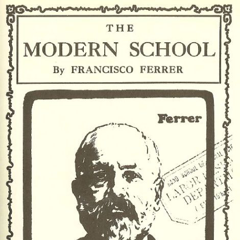

Universal education
through schooling is not feasible. It would be no more feasible if it were attempted by means of alternative institutions built on the style of present schools. Neither new attitudes of teachers toward their pupils nor the proliferation of educational hardware or software (in classroom or bedroom), nor finally the attempt to expand the pedagogue's responsibility until it engulfs his pupils' lifetimes will deliver universal education. The current search for new educational funnels must be reversed into the search for their institutional inverse: educational webs which heighten the opportunity for each one to transform each moment of his living into one of learning, sharing, and caring. We hope to contribute concepts needed by those who conduct such counterfoil research on education--and also to those who seek alternatives to other established service industries.

According to a contemporary review in The Libertarian Forum, "Illich's advocacy of the free market in education is the bone in the throat that is choking the public educators." Since Illich's opposition was not merely to publicly funded schooling, as with the libertarians, but to schooling as such; the disestablishment of schools was for him not a means to a free market in educational services, but a deschooled society, which was a more fundamental shift. As he later asserted in After Deschooling, What? (1973): 'We can disestablish schools, or we can deschool culture'. He actually opposed advocates of free-market education as "the most dangerous category of educational reformers."